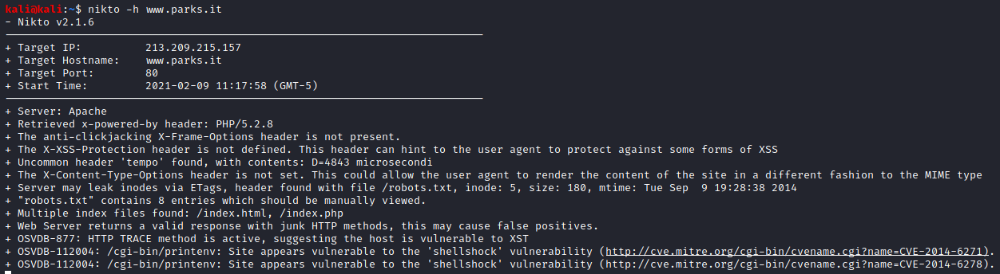
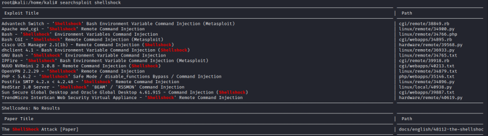

nikto
nikto is a useful to find vulnerabilities in Web Applications
root@kali# nikto -h <host>

Then use Searchsploit to search for the vulnerability
root@kali# searchsploit --update
root@kali# searchsploit <vulnerability>
